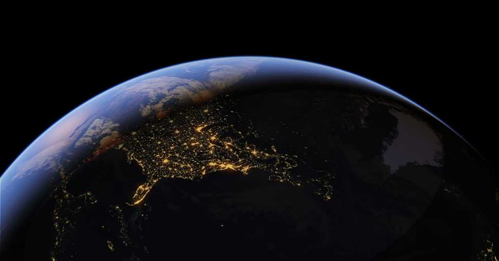

SkyView helps you explore the night sky by pointing your phone at stars, planets,
satellites, or constellations. It uses augmented reality to show you what’s above you in real-time.
It’s great for learning astronomy and spotting cool space objects like the ISS or Mars.
NASA's EYE
NASA’s Eyes is an interactive website that lets you explore Earth, the solar system, and space missions in 3D.
You can track real-time data of satellites, climate changes, and spacecraft movements. It’s perfect for science
lovers to visualize space missions and planetary science. Great for learning in a fun way!
GOOGLE EARTH

Google Earth is a 3D mapping tool that lets you explore the entire globe from your device.
You can view satellite images, terrain, cities, and even historical maps. It’s useful for
learning geography, exploring new places, or seeing your home from space.
It also includes cool features like Street View and Voyager for guided tours.